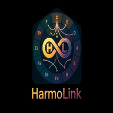

HarmoLink Pro
Entrez votre clé de licence pour activer
toutes les fonctionnalités Pro.
Activer la licence
Pas encore de licence ?
Acheter HarmoLink Pro →
C
G
D
A
E
B
F#
Db
Ab
Eb
Bb
F
H
L
HARMOLINK
Mes Presets
🗺 CircleMap
☀️
EN · English
— termes
×
∞
Cercle
𝄞
Dictionnaire
♫
Accords
〜
Gammes
▣
Formes
☰ Menu
↺ Reset
!
🔊
Son
♯/♭ Auto
Do Ré Mi
✦ Free
🗺 CircleMap
Exporter la progression
✕
📄
TXT
Texte brut · chords & BPM
🗒️
PDF
Document imprimable
🎹
MIDI
Fichier MIDI standard
🎼
XML
MusicXML · MuseScore, Sibelius…
🔊
WAV
Fichier wav
💾
.harmo
Sauvegarder · partager avec d'autres
Mes Presets
✕
Save
📂
Ouvrir un fichier
.harmo
grille partagée
Aucun preset sauvegardé.
Construisez une progression, puis cliquez sur
« Sauvegarder ».
⚙ Paramètres
✕
🔊 Son
🔊 On
Volume
80%
🎹 Instrument
🎹 Piano
⚡ Rhodes
🎻 Strings
🪶 Lite
♯/♭ Armure
♯/♭ Auto
🎵 Notation
Do Ré Mi
✦ Free mode
✦ Free
🎹 MIDI
🎹 Connecter
⌨ MIDI Learn
⌨ Apprendre
⏺ Enregistrement
⏺ REC
⏹
♩
🔒 Cercle
🔓 Déverrouillé
❓ Tutoriel
❓ Lancer
⚡ Performances
⚡ Perf OFF
𝄞 Portée
𝄞 Portée OFF
☀️ Thème
☀️ Clair / 🌙 Sombre
📤 Export
📤 Exporter
💾 Sauvegarder
💾 Sauvegarder
📂 Charger
📂 Charger
🎓 Learn Mode
🎓 Apprendre
🗺 CircleMap
🗺 Sauvegarder / Charger
🗺 CircleMap — Sauvegarder le cercle
✕
Sauvegarder la configuration actuelle
💾 Sauvegarder
Export / Import fichier .circlemap
⬇ Exporter .circlemap
⬆ Importer .circlemap
Configurations sauvegardées
Aucune configuration sauvegardée.
Personnalise le cercle puis clique sur Sauvegarder.
![]()